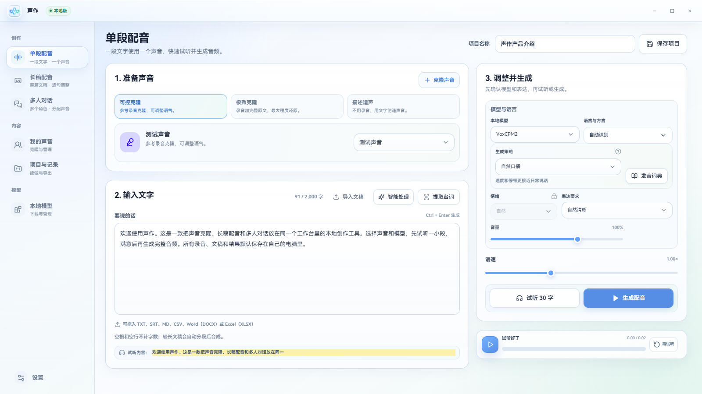

B 站封面预览 纯静态 · 2026.08 把封面放进近似 B 站首页和手机端推荐流里，判断它值不值得被点开。 52 张已导入的主播封面做参照上传封面，立刻看到它在真实推荐流里的样子纯静态页面，打开即用 在线 Demo ↗
 声作 TypeScript · 2026.08 Windows 本地声音克隆、长稿配音与多人脚本工作台。 声音克隆在本机完成长稿分段配音多人脚本分配素材不上传 GitHub ↗
WinGlow Rust · 2026.10 让 Windows 更好看、更好用：字体、右键菜单、任务栏、窗口与开始菜单。 字体、右键菜单、任务栏、窗口与开始菜单一键调整默认 Rain 动态壁纸修改前备份、一键还原、托盘运行 GitHub ↗